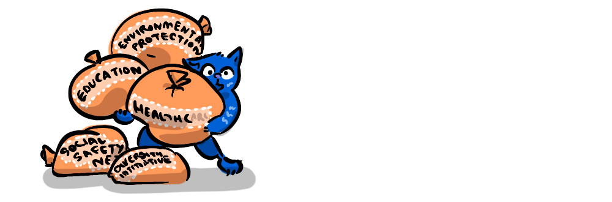
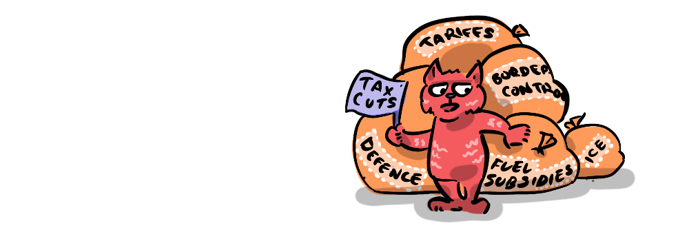

During my misspent youth I partook in a number of polite "online disagreements" about religion. As a budding young wanderer in philosophy I felt one needed to ascend the godly terrain in order to reach higher ground. I learned much through these debates, honing my own philosophical position, but once in a while I'd be faced with an argument that would change my perspective.
One such shift came when my
Rights and liberties can be interpreted as two sides of the state intervention coin, where the acts to provide rights to people by restricting particular individual freedoms (liberties). So, from this perspective, rights and liberties are distinct, but interdependently defined.
- Liberties are natural freedoms that individuals have in a state of nature.
- Rights are provided by means of state intervention—through limiting certain liberties.
Put plainly, nature grants liberties, society grants rights.
For example, your right to safety is provided by the State through laws which restrict violence and unsafe practices (drunk driving etc). Ideally this is simply a balance agreed to by society for the good of all.
From this perspective rights and liberties exist in a zero-sum relationship—to gain rights you must lose liberties.
But it is fruitful to look at the balance in terms of maximising human well-being. This introduces a non-zero-sum dimension to the zero-sum balance of rights and liberties. For instance we can all understand that a society where we leave people at liberty to murder and fail to provide the right to protection from murder is not maximising human well-being.
By finding the optimal balance, we are doing what economists call "satisficing"—it's not a society optimised for the greatest freedom, or the greatest rights, it's optimised for the best balance of the two that leads to the greatest well-being.
There are many different issues that can be balanced in this way to increase well-being. The following simple interactive illustrates how this dynamic could work— the optimal settings are based on my own assumptions, and are only for demonstration purposes.
Due to the aforementioned interchangeable use of these terms, the wording for some of the above scales might sound a little strange, for instance, we often speak about "Freedom of speech" as a "right" and this is partly because not only is freedom of speech a liberty but it is also protected by the State, in that people expressing controversial views are provided with actual physical protection in the form of police officers at demonstrations etc.
My earliest memory about the concept of freedom of speech was my dad explaining to me that there were Klu Klux Klan parades in the US where police officers (including African American police officers) were required to provide protection to the those in the parade, against potential violence from counter protesters. It was one of those brain-breaking moments that really drove home to me the profound cost and significance of freedom of speech.
You might also notice that a couple of the rights are opposed by freedom from taxation. Taxation will be a factor in the granting of many different rights, but I've included it regarding healthcare and education as in these cases it is the primary cost. Whereas policing, for instance, costs tax-payer money but it's primarily a limit on our behaviour.
By looking at rights and liberties this way, it helps clarify what we're doing when making policy around a given issue, are we allowing something, or are we using state resources to restrict liberties in order to provide something? To be clear, neither of these are wrong, societies are always a balancing act between these rights and liberties. This perspective allows us to clearly ask and answer what liberties are we willing to give up in order to achieve rights that are important to us?
As you can see from the above graph I am happy to provide a chunk of my pay cheque each week to the government in the form of tax in order to have the right to schooling, healthcare, police, fire protection and roads. I am happy to have that tax enforced (a limitation on my liberty to hold on to that cash) as long as it is also enforced on everyone else. People's preferences in this respect vary, and so we find a balance through democratic means.
This perspective plays into conceptions of "big" and "small" government, where "big" government provides more rights by limiting more liberties, while a "small" government provides less rights, but impinges less on individual liberty.
This has implications for assessing the claims or promises a government makes regarding its size. For instance a government that spends lots of tax-payer money on schooling and healthcare is obviously (unashamedly) a "big" government. But what happens when a supposedly "small" government who promises to "drain the swamp", eliminate "government inefficiency" and increase individual freedoms by providing tax breaks, turns around and introduces tariffs?
Recent US tariffs are an introduction of a tax (a limitation on liberty) that also, by design, limits the freedom (liberty) of international free trade. From this perspective it is clear that this is a "big" government move. The right these tariffs are meant to be providing is eventually a right to employment (by bringing back industrial jobs, apparently*). The same can be said for increasing border control and ICE. This is paid for by tax (again, a limitation on liberty) while also imposing a limitation on the liberty of undocumented people. The right (apparently) being provided through these impositions on liberty is, again, a right to employment.
Talley that up, and that's four heavy limitations on liberty in exchange for one potential right.
Personally, I believe using the levers of government in order to artificially generate work for a country's citizens is both a losing battle and a poor use of capital—the logic of "I'm going to charge you money, and act with cruelty towards others so that you can do more low wage labour" makes no sense on an individual or collective level. The fact that this is accompanied by cost cutting in areas like healthcare, education and international aid, which all yield high returns for human well-being, reflects an ideology that has everything, as they say, "bass-ackwards".
Now, please allow me a moment to dismount this soapbox.
The assessment of the current US administration's tariffs as a "big" government move isn't original, it is, after all, what lead to the rift between Musk and Trump. But, I think the alignment with the perspective of rights and liberties I'm proposing makes for a clearer way of thinking about such issues.
I'm not proposing we align all naming conventions with this perspective of rights and liberties, I just find it a useful lens through which we can assess the pros and cons, benefits and costs of our political perspectives, as a whole—"am I more small or big government?" and on a policy basis—"does this policy increase liberty or rights? And what is the trade off?". The balance of these rights and liberties is an example of a meta-game, a zero-sum relationship that can have non-zero-sum results for well-being.

What do you think? Is this idea too simplistic? Are there examples of rights that you think are ambiguous? What liberties are you willing to sacrifice for which rights?